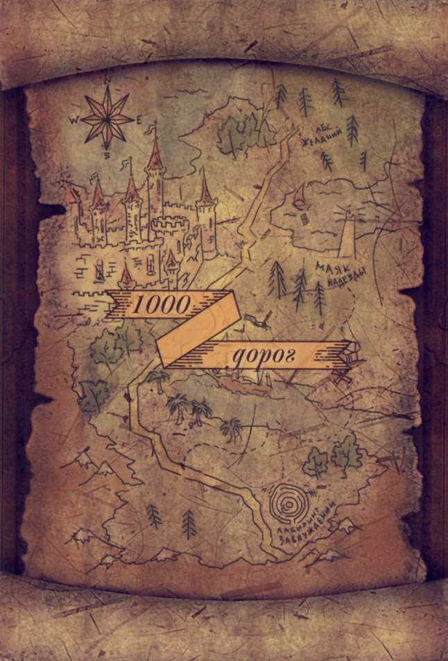

Колода “1000 дорог”
При работе непосредственно с картинками из отдельных карт можно выложить единое картографическое полотно, накладывая карты друг на друга таким образом, чтобы закрыть текст, оставив лишь изображение. Другое существенное отличие – это система организации новых метафорических ассоциативных карт. У традиционных МАК системы в привычном понимании этого слова нет. Они отчасти опираются на знакомые всем архетипы и затрагивают почти все основные сферы жизни каждого человека, но не имеют организующей структуры (при работе из такой колоды можно без всякого ущерба убрать несколько карт или даже половину). Стимульные материалы «1000 дорог» основываются на проверенной веками системе Таро. Напомним, что Таро представляет собой систему символов (включая и те самые юнгианские архетипы), которая появилась предположительно в 14-16 вв. Таро ассоциируется у большинства людей исключительно с гаданием, но на самом деле изображения на картах Таро имеют очень сложное истолкование. Они скрывают в себе неисчерпаемый потенциал для работы не только приверженцев эзотерики, но и вполне традиционных психологов. Более того, многие современные специалисты с успехом применяют Таро в своей работе, используя их как аналог метафорических карт (чем, собственно, Таро и является).
Но карты «1000 дорог» не имеют полной привязки к старинной системе гадания, они не копируют ее, а лишь опираются на ее многозначность и многовариантность истолкования. Для психологов и всех, кто применяет традиционные карты Таро в своей работе, карты из колоды «1000 дорог» имеют указания на масти и их значения согласно наиболее распространенным интерпретациям Райдера – Уэйта и Алистера Кроули. Но эти значения даются не в виде прогноза, характерного гадания, а как список ключевых слов, которые могут использовать в своей работе и сказкотерапевты, и люди, незнакомые ни с традиционными метафорическими картами, ни с системой Таро. Но и этим потенциал нового авторского проекта не ограничивается. Под изображением на каждой карте идет список вопросов к нему, который позволяет более глубоко продумать сказочный сюжет, оценить представления клиента о себе, об окружающих и о своем месте в мире. Такая структура, по мнению создателей карт, позволяет использовать их и как традиционные метафорические ассоциативные карты, когда основное внимание уделяется картинке, а не тексту, и как стимульный материал для специалистов по сказкотерапии, писателей и просто любителей сочинять истории, и как Таро в прогностических целях.
Карты «1000 дорог» эффективно используются практикующими психологами, но их простота и наглядность позволяет работать с ними людям, которые не имеют ни специального образования, ни опыта работы с метафорическими ассоциативными картами.
Сферы применения карты "1000 дорог":
- Сказкотерапия.
- Разработка сценариев.
- Самодиагностика.
- Психологическое консультирование и диагностика.
- Коррекционная работа, в том числе с детьми и подростками.
- Развитие творческих способностей и воображения.
- Работа по проективной методике "Карта внутренней страны".
- Разрешение проблемной ситуации.
- Преодоление кризиса и исцеление от последствий травмы.
- Управление стрессом.
- Психологические игры.
- Прогностические расклады.
Карта Внутренней Страны
С помощью этого увлекательного психотерапевтического упражнения вы всегда сможете определить, где вы находитесь, и проложить путь к вашей цели. Для этого просто выложите все картинки в случайном порядке в единую карту - это и есть Ваша Карта Внутренней Страны.
Теперь найдите "Точку отсчета" - картинку, которая наиболее точно характеризует вашу нынешнюю ситуацию (мироощущение, проблему и т.п.) и выберите изображение, символизирующее вашу цель, куда в итоге вы бы хотели прийти. Осталось проложить путь к вашей мечте, преодолев все препятствия и задействовав все ресурсы, которые вам будут встречаться в дороге.
